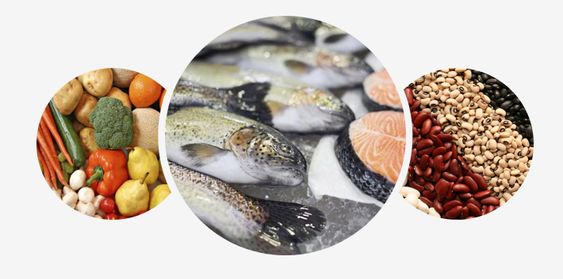

<section>
  
  <article>
    Сега още повече важи в сила здравословното хранене. Редовният прием на зеленчуци, плодове, както и 
    белтъци, било то растителни или животински, само ще повиши Вашия имунитет срещу всички вируси. 
    Цитрусите като портокал, лимон и грейпфрут са отлични източници на най-ценния витамин - Витамин С. 
    Приемането на допълнителни витамини и добавки е препоръчително да се осъществява след консултация с
    Вашия личен лекар.
  </article>
</section>